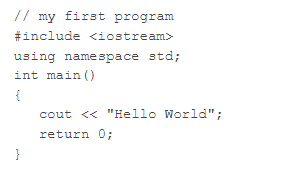

A computer programming is a formal computer language or constructed language designed to communicate instructions to machine, particularly computer.
Programming Language can be used to create programs to control the behaviour of a machine or to express algorithms.
An algorithm is a process or set of rules to followed in calculations or other problem-solving operations especially by a computer.
TYPES OF PROGRAMMING LANGUAGE
1. High Level
2. Intermediate/ Assembly
3. Machine Language
1. MACHINE LANGUAGE
-- It is a language of machines, consisting of bits (1s and 0s) put together into chunks like bytes, a group of 8 bits, and lots of other larger sizes.
-- It is highly unlikely you will even have to write in machine language.
2.ASSEMBLY LANGUAGE
-- Assembly language is one level above machine language.
-- It uses short abbrevations code for instructions and allow programmers to introduce names for blocks of memory that hold data.
--These abbrevations are known as Mnemonics
3. HIGH LEVEL LANGUAGE
-- High level language are closer to human language and highly understandable.
-- Ultimately programs written in high level language must be translated into machine language by a compiler or interpreter.
-- Example: COBOL, C, C++, FORTRAN, etc.
C++ Programming Language developed by Bjarne Stroutrup starting in 1979 at Bell Labs. C++ runs on a variety of platforms such as Windows, MacOS, and the various versions of UNIX. It is an extension of C Programming Language. It has Object Oriented features. Primarily used in developement of system or application software, drivers, client server applications, and embedded features.
C++ FIRST HELLO WORLD PROGRAM WITH EXPLANATION

1. // my first program:
This line is a comment line. Comments are extra details about the code and have no actual effect on the program logic or execution. They are only meant for programmers to write notes about their code. Any line beginning with '//' without quotes or between /*-------*/ in C++ is comment.
2. #include
3. int main()
This line is used to declare a function named "main" which returns data of integer type. A fucntion is a group of statements clubbed together under a single name used to preform certain task or activity. The main function in C++ is a special function as it is the starting point of program begins with main() function, no matter where the function is loacted in the program. So every C++ prgram must have a main() function.
4. {and}
The opening braces indicates the beginning of the main function and the closing braces } indicates the ending of the main function. Every thing between these two comprises the body of the main function.
5. cout"Hello World"
This line tells the compiler to display the message "Hello World" on the screen. This line is called statement in C++. Every statement is meant to perform some task. A semi-colon ';' is used to end tthe statement. The cout is used to identify the standard character output device which is usually the desktop screen. Every thing followed by the charecter "<<" is displayed to the output device.
6. return 0
This is also a statement. This statement is used to return a value from a function and indicates the finishing of function. This statement is basically used in function to return the results of the operation performed by a function.